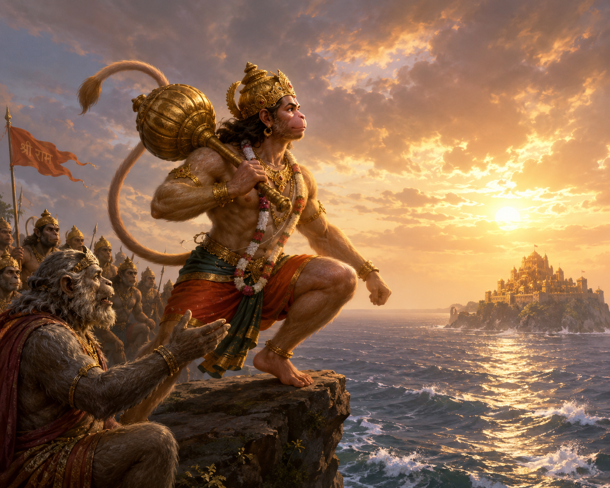

Kishkindhakanda Sarga 67
॥ॐ॥
मनोजवं मारुततुल्यवेगं जितेन्द्रियं बुद्धिमतां वरिष्ठम्।
वातात्मजं वानरयूथमुख्यं श्रीरामदूतं शरणं प्रपद्ये॥
Kishkindhakanda Sarga 67
Hanuman displays his immeasurable might and proceeds to mount Mahendra

(50 Shlokas)
तं दृष्ट्वा जृम्भमाणं ते क्रमितुं शतयोजनम्।
वीर्येणापूर्यमाणं च सहसा वानरोत्तमम्॥4.67.1॥
Word-by-word meaning: तम् him, दृष्ट्वा having seen, जृम्भमाणम् expanding or yawning, ते they, क्रमितुम् to cross, शत-योजनम् one hundred yojanas, वीर्येण with prowess or energy, आपूर्यमाणम् being filled up, च and, सहसा suddenly, वानर-उत्तमम् the best among vanaras
Anvaya: ते शतयोजनं क्रमितुं सहसा वीर्येण आपूर्यमाणं जृम्भमाणं च तं वानरोत्तमं दृष्ट्वा…
Simple meaning: Having seen that best among vanaras (Hanuman) suddenly filling up with prowess and expanding himself to cross the one hundred yojanas, they (the vanaras were amazed).
सहसा शोकमुत्सृज्य प्रहर्षेण समन्विताः।
विनेदुस्तुष्टुवुश्चापि हनूमन्तं महाबलम्॥4.67.2॥
Word-by-word meaning: सहसा suddenly, शोकम् grief, उत्सृज्य having cast away, प्रहर्षेण with great joy, समन्विताः filled with, विनेदुः cheered or shouted, तुष्टुवुः praised, च and, अपि also, हनूमन्तम् Hanuman, महा-बलम् of great strength
Anvaya: …सहसा शोकम् उत्सृज्य प्रहर्षेण समन्विताः (ते) महाबलं हनूमन्तं विनेदुः तुष्टुवुः च अपि।
Simple meaning: …suddenly casting away their grief and filled with great joy, they cheered and also praised Hanuman, who was endowed with great strength.
प्रहृष्टा विस्मिताश्चैव वीक्षन्ते स्म समन्ततः।
त्रिविक्रमकृतोत्साहं नारायणमिव प्रजाः॥4.67.3॥
Word-by-word meaning: प्रहृष्टाः overjoyed, विस्मिताः amazed, च and, एव indeed, वीक्षन्ते स्म looked at, समन्ततः from all sides, त्रिविक्रम-कृत-उत्साहम् who was making an effort to take the three steps, नारायणम् Narayana, इव like, प्रजाः citizens or subjects
Anvaya: प्रहृष्टाः विस्मिताः च एव प्रजाः त्रिविक्रमकृतोत्साहं नारायणम् इव समन्ततः वीक्षन्ते स्म।
Simple meaning: Overjoyed and amazed, they looked at him from all sides, just as the subjects looked at Narayana when He was making an effort to take the three steps to measure the universe.
संस्तूयमानो हनुमान्व्यवर्धत महाबलः।
समाविध्य च लाङ्गूलं हर्षाद्बलमुपेयिवान्॥4.67.4॥
Word-by-word meaning: संस्तूयमानः being praised, हनुमान् Hanuman, व्यवर्धत grew in size, महा-बलः of great strength, समाविध्य and lashing or waving, च and, लाङ्गूलम् tail, हर्षात् out of joy, बलम् strength, उपेयिवान् attained or gathered
Anvaya: संस्तूयमानः महाबलः हनुमान् व्यवर्धत, हर्षात् च लाङ्गूलं समाविध्य बलम् उपेयिवान्।
Simple meaning: Being praised, the exceptionally strong Hanuman grew in size, and lashing his tail out of joy, he gathered immense strength.
तस्य संस्तूयमानस्य सर्वैर्वानरपुङ्गवैः।
तेजसापूर्यमाणस्य रूपमासीदनुत्तमम्॥4.67.5॥
Word-by-word meaning: तस्य of him, संस्तूयमानस्य being praised, सर्वैः by all, वानर-पुङ्गवैः by the foremost among vanaras, तेजसा with luster or energy, आपूर्यमाणस्य being filled up, रूपम् appearance or form, आसीत् became, अनुत्तमम् incomparable or supreme
Anvaya: सर्वैः वानरपुङ्गवैः संस्तूयमानस्य तेजसा आपूर्यमाणस्य तस्य रूपम् अनुत्तमम् आसीत्।
Simple meaning: As he was being praised by all the foremost among the vanaras and was being filled with energy, his appearance became incomparable.
यथा विजृम्भते सिंहो विवृद्धो गिरिगह्वरे।
मारुतस्यौरसः पुत्रस्तथा सम्प्रति जृम्भते॥4.67.6॥
Word-by-word meaning: यथा just as, विजृम्भते yawns or stretches himself, सिंहः a lion, विवृद्धः fully grown, गिरि-गह्वरे in a mountain cave, मारुतस्य of the Wind-God, औरसः biological, पुत्रः son, तथा in that manner, सम्प्रति now, जृम्भते expands or stretches himself
Anvaya: गिरिगह्वरे विवृद्धः सिंहः यथा विजृम्भते, मारुतस्य औरसः पुत्रः तथा सम्प्रति जृम्भते।
Simple meaning: Just like a fully grown lion stretches himself inside a mountain cave, the biological son of the Wind-God (Hanuman) now expanded himself in the same manner.
अशोभत मुखं तस्य जृम्भमाणस्य धीमतः।
अम्बरीषमिवाऽदीप्तं विधूम इव पावकः॥4.67.7॥
Word-by-word meaning: अशोभत shone, मुखम् face, तस्य his, जृम्भमाणस्य of the one who was expanding or yawning, धीमतः of the wise one, अम्बरीषम् a frying pan or melting pot, इव like, अदीप्तम् glowing or fiercely burning, विधूमः smokeless, इव like, पावकः fire
Anvaya: जृम्भमाणस्य तस्य धीमतः मुखम् अदीप्तम् अम्बरीषम् इव विधूमः पावकः इव अशोभत।
Simple meaning: The face of that wise Hanuman, as he was expanding himself, shone like a fiercely glowing melting pot and like a smokeless fire.
हरीणामुत्थितो मध्यात्सम्प्रहृष्टतनूरुहः।
अभिवाद्य हरीन्वृद्धान्हनुमानिदमब्रवीत्॥4.67.8॥
Word-by-word meaning: हरीणाम् of the vanaras, उत्थितः having stood up, मध्यात् from the midst, सम्प्रहृष्ट-तनूरुहः with hair standing on end due to joy, अभिवाद्य having saluted, हरीन् vanaras, वृद्धान् the elderly ones, हनुमान् Hanuman, इदम् this, अब्रवीत् spoke
Anvaya: हरीणां मध्यात् उत्थितः सम्प्रहृष्टतनूरुहः हनुमान् वृद्धान् हरीन् अभिवाद्य इदम् अब्रवीत्।
Simple meaning: Standing up from the midst of the vanaras, with his hair standing on end due to great joy, Hanuman saluted the elderly vanaras and spoke these words.
अरुजत्सर्वताग्राणि हुताशनसखोऽनिलः।
बलवानप्रमेयश्च वायुराकाशगोचरः॥4.67.9॥
Word-by-word meaning: अरुजत् shattered or broke, सर्व-नग-अग्राणि the tops of all trees or mountains, हुताशन-सखः the friend of fire, अनिलः the wind, बलवान् powerful, अप्रमेयः च and immeasurable, वायुः the Wind-God, आकाश-गोचरः moving in the sky
Anvaya: हुताशनसखः बलवान् अप्रमेयः च आकाशगोचरः वायुः अनिलः सर्वनगाग्राणि अरुजत्।
Simple meaning: “The powerful and immeasurable Wind-God, who is the friend of fire and moves through the sky, shattered the tops of all the trees.
तस्याहं शीघ्रवेगस्य शीघ्रगस्य महात्मनः।
मारुतस्यौरसः पुत्रः प्लवनेनास्मि तत्समः॥4.67.10॥
Word-by-word meaning: तस्य of that, अहम् I, शीघ्र-वेगस्य of rapid speed, शीघ्र-गस्य of fast movement, महा-आत्मनः of the great-souled one, मारुतस्य of the Wind-God, औरसः biological, पुत्रः son, प्लवनेन in leaping or flying, अस्मि am, तत्-समः equal to him
Anvaya: अहं शीघ्रवेगस्य शीघ्रगस्य महात्मनः तस्य मारुतस्य औरसः पुत्रः (अस्मि), प्लवनेन तत्समः अस्मि।
Simple meaning: “I am the biological son of that great-souled Wind-God who possesses rapid speed and fast movement, and I am equal to him in leaping.
उत्सहेयं हि विस्तीर्णमालिखन्तमिवाम्बरम्।
मेरुं गिरिमसङ्गेन परिगन्तुं सहस्रशः॥4.67.11॥
Word-by-word meaning: उत्सहेयम् I am capable or I venture, हि indeed, विस्तीर्णम् vast, आलिखन्तम् scraping or touching, इव as if, अम्बरम् the sky, मेरुम् Meru, गिरिम् mountain, असङ्गेन without stopping or without any obstruction, परिगन्तुम् to circumambulate, सहस्रशः thousands of times
Anvaya: विस्तीर्णम् अम्बरम् आलिखन्तम् इव मेरुं गिरिम् असङ्गेन सहस्रशः परिगन्तुम् उत्सहेयं हि।
Simple meaning: “I am indeed capable of circumambulating the vast Mount Meru, which stands as if scraping the sky, thousands of times without any obstruction.
बाहुवेगप्रणुन्नेन सागरेणाहमुत्सहे।
समाप्लावयितुं लोकं सपर्वतनदीह्रदम्॥4.67.12॥
Word-by-word meaning: बाहु-वेग-प्रणुन्नेन propelled by the speed of my arms, सागरेण by the ocean, अहम् I, उत्सहे am capable or venture, समाप्लावयितुम् to submerge completely, लोकम् the world, स-पर्वत-नदी-ह्रदम् along with its mountains, rivers, and lakes
Anvaya: अहं बाहुवेगप्रणुन्नेन सागरेण सपर्वतनदीह्रदं लोकं समाप्लावयितुम् उत्सहे।
Simple meaning: “I am capable of completely submerging the entire world, along with its mountains, rivers, and lakes, using the ocean driven by the immense speed of my arms.
ममोरुजङ्घावेगेन भविष्यति समुत्थितः।
सम्मूर्च्छितमहाग्राहस्समुद्रो वरुणालयः॥4.67.13॥
Word-by-word meaning: मम् my, ऊरु-जङ्घा-वेगेन by the speed of my thighs and shanks, भविष्यति will become, समुत्थितः agitated or churned up, सम्मूर्च्छित-महा-ग्राहः filled with bewildered large aquatic animals, समुद्रः the ocean, वरुण-आलयः the abode of Varuna
Anvaya: मम् ऊरुजङ्घावेगेन वरुणालयः समुद्रः समुत्थितः सम्मूर्च्छितमहाग्राहः च भविष्यति।
Simple meaning: “Churned up by the speed of my thighs and shanks, the ocean, which is the abode of Varuna, will rise up with its large aquatic animals thrown into utter bewilderment.
पन्नगाशनमाकाशे पतन्तं पक्षिसेविते।
वैनतेयमहं शक्तः परिगन्तुं सहस्रशः॥4.67.14॥
Word-by-word meaning: पन्नग-अशनम् the consumer of serpents (Garuda), आकाशे in the sky, पतन्तम् flying, पक्षि-सेविते frequented by birds, वैनतेयम् the son of Vinata, अहम् I, शक्तः am capable, परिगन्तुम् to circle around, सहस्रशः thousands of times
Anvaya: पक्षिसेविते आकाशे पतन्तं पन्नगाशनं वैनतेयम् अहं सहस्रशः परिगन्तुं शक्तः।
Simple meaning: “I am capable of circling thousands of times around Garuda, the son of Vinata and devourer of serpents, as he flies through the sky frequented by birds.
उदयात्प्रस्थितं वापि ज्वलन्तं रश्मिमालिनम्।
अनस्तमितमादित्यमभिगन्तुं समुत्सहे॥4.67.15॥
Word-by-word meaning: उदयात् from the mountain of sunrise (Udayagiri), प्रस्थितम् started or risen, वा or, अपि also, ज्वलन्तम् blazing, रश्मि-मालिनम् garlanded with rays (the sun), अनस्तमितम् before it sets, आदित्यम् the sun, अभिगन्तुम् to reach or approach, समुत्सहे I am highly capable
Anvaya: उदयात् प्रस्थितं ज्वलन्तं रश्मिमालिनम् आदित्यम् अनस्तमितम् वा अपि अभिगन्तुं (अहं) समुत्सहे।
Simple meaning: “I am highly capable of racing towards the blazing sun, garlanded with rays, from the moment it rises over the eastern mountain, and reaching it before it sets.
ततो भूमिमसंस्पृश्य पुनरागन्तुमुत्सहे।
प्रवेगेनैव महता भीमेन प्लवगर्षभाः॥4.67.16॥
Word-by-word meaning: ततः after that, भूमिम् the earth, असंस्पृश्य without touching, पुनः again, आगन्तुम् to return, उत्सहे I am capable, प्रवेगेन with great speed, एव indeed, महता immense, भीमेन with terrifying, प्लवग-र्षभाः O foremost among the vanaras
Anvaya: प्लवगर्षभाः! ततः भूमिम् असंस्पृश्य महता भीमेन प्रवेगेन एव पुनः आगन्तुम् उत्सहे।
Simple meaning: “O foremost among the vanaras, I am capable of returning back from the sun without even touching the earth, moving indeed with immense and terrifying speed.
उत्सहेयमतिक्रान्तुं सर्वानाकाशगोचरान्।
सागरं क्षोभयिष्यामि दारयिष्यामि मेदिनीम्॥4.67.17॥
Word-by-word meaning: उत्सहेयम् I am capable, अतिक्रान्तुम् to overtake or surpass, सर्वान् all, आकाश-गोचरान् sky-dwellers or beings moving in the sky, सागरम् the ocean, क्षोभयिष्यामि I will agitate, दारयिष्यामि I will tear apart, मेदिनीम् the earth
Anvaya: सर्वान् आकाशगोचरान् अतिक्रान्तुम् उत्सहेयम्; सागरं क्षोभयिष्यामि; मेदिनीं दारयिष्यामि च।
Simple meaning: “I am capable of surpassing all the beings that move through the sky; I will violently agitate the ocean and tear the earth apart.
पर्वतांश्चूर्णयिष्यामि प्लवमानः प्लवङ्गमाः।
हरिष्याम्यूरुवेगेन प्लवमानो महार्णवम्॥4.67.18॥
Word-by-word meaning: पर्वतान् mountains, चूर्णयिष्यामि I will pulverize or crush to pieces, प्लवमानः while leaping, प्लवङ्गमाः O vanaras, हरिष्यामि I will take away or carry along, ऊरु-वेगेन by the speed of my thighs, प्लवमानः while leaping, महा-अर्णवम् the great ocean
Anvaya: प्लवङ्गमाः! प्लवमानः पर्वतान् चूर्णयिष्यामि, प्लवमानः ऊरुवेगेन महार्णवं हरिष्यामि।
Simple meaning: “O vanaras, while leaping I will pulverize the mountains, and as I fly across, I will carry the waters of the great ocean along with me by the sheer speed of my thighs.
लतानां विविधं पुष्पं पादपानां च सर्वशः।
अनुयास्यन्ति मामद्य प्लवमानं विहायसा॥4.67.19॥
Word-by-word meaning: लतानाम् of the creepers, विविधम् various kinds of, पुष्पम् flowers, पादपानाम् of the trees, च and, सर्वशः everywhere or from all sides, अनुयास्यन्ति will follow, माम् me, अद्य today, प्लवमानम् while leaping or flying, विहायसा through the sky
Anvaya: अद्य विहायसा प्लवमानं मां लतानां पादपानां च विविधं पुष्पं सर्वशः अनुयास्यन्ति।
Simple meaning: “Today, as I leap and fly through the sky, the various kinds of flowers from the creepers and trees everywhere will follow after me.
भविष्यति हि मे पन्थास्स्वातेः पन्था इवाम्बरे।
चरन्तं घोरमाकाशमुत्पतिष्यन्तमेव वा॥4.67.20॥
द्रक्ष्यन्ति निपतिष्यन्तं च सर्वभूतानि वानराः।
Word-by-word meaning: भविष्यति will become, हि indeed, मे my, पन्थाः path, स्वातेः of the star Swati, पन्थाः path, इव like, अम्बरे in the sky, चरन्तम् moving, घोरम् formidable or vast, आकाशम् through the sky, उत्पतिष्यन्तम् flying upwards, एव वा or even, द्रक्ष्यन्ति will see, निपतिष्यन्तम् falling down or descending, च and, सर्वभूतानि all living beings, वानराः O vanaras
Anvaya: वानराः! अम्बरे मे पन्थाः स्वातेः पन्थाः इव भविष्यति हि। घोरम् आकाशं चरन्तम् उत्पतिष्यन्तं निपतिष्यन्तं च एव वा मां सर्वभूतानि द्रक्ष्यन्ति।
Simple meaning: “O vanaras, my path in the sky will indeed look just like the brilliant path of the Swati star. All living beings will look up and see me as I move through the vast sky, whether I am soaring upwards or descending down.
महामेरुप्रतीकाशं मां द्रक्ष्यथ वानराः॥4.67.21॥
दिवमावृत्य गच्छन्तं ग्रसमानमिवाम्बरम्।
Word-by-word meaning: महा-मेरु-प्रतीकाशम् resembling the great mountain Meru, माम् me, द्रक्ष्यथ you all will see, वानराः O vanaras, दिवम् the sky, आवृत्य covering or enveloping, गच्छन्तम् going or moving along, ग्रसमानम् swallowing, इव as if, अम्बरम् the sky
Anvaya: वानराः! महामेरुप्रतीकाशं दिवम् आवृत्य गच्छन्तम् अम्बरं ग्रसमानम् इव मां द्रक्ष्यथ।
Simple meaning: “O vanaras, you will see me looking like the great mountain Meru as I move along, covering the heavens and appearing as if I am swallowing the very sky itself.
विधमिष्यामि जीमूतान्कम्पयिष्यामि पर्वतान्॥4.67.22॥
सागरं शोषयिष्यामि प्लवमानस्समाहितः।
Word-by-word meaning: विधमिष्यामि I will scatter or blow away, जीमूतान् the clouds, कम्पयिष्यामि I will shake, पर्वतान् the mountains, सागरम् the ocean, शोषयिष्यामि I will dry up, प्लवमानः while leaping, समाहितः with full concentration or resolve
Anvaya: प्लवमानः समाहितः जीमूतान् विधमिष्यामि, पर्वतान् कम्पयिष्यामि, सागरं च शोषयिष्यामि।
Simple meaning: “As I leap with full concentration and resolve, I will scatter the clouds, shake the mountains, and dry up the ocean.
वैनतेयस्य या शक्तिर्मम सा मारुतस्य वा॥4.67.23॥
ऋते सुपर्णराजानं मारुतं वा महाजवम्।
न तद्भूतं प्रपश्यामि यन्मां प्लुतमनुव्रजेत्॥4.67.24॥
Word-by-word meaning: वैनतेयस्य of Garuda (the son of Vinata), या which, शक्तिः power or strength, मम mine, सा that, मारुतस्य of the wind god, वा or, ऋते except for, सुपर्ण-राजानम् the king of birds (Garuda), मारुतम् the Wind-God, वा or, महाजवम् of great speed, न not, तत् that, भूतम् living being, प्रपश्यामि I see, यत् which, माम् me, प्लुतम् while leaping, अनुव्रजेत् can follow behind
Anvaya: वैनतेयस्य मारुतस्य वा या शक्तिः सा मम (अस्ति)। महाजवं सुपर्णराजानं मारुतं वा ऋते, यत् प्लुतं माम् अनुव्रजेत् तत् भूतं न प्रपश्यामि।
Simple meaning: “The strength I possess is equal to that of Garuda or the Wind-God. Except for the incredibly fast king of birds, Garuda, or the Wind-God himself, I do not see any living being who can follow behind me while I leap.
निमेषान्तरमात्रेण निरालम्बनमम्बरम्।
सहसा निपतिष्यामि घनाद्विद्युदिवोत्थिता॥4.67.25॥
Word-by-word meaning: निमेष-अन्तर-मात्रेण in just the blink of an eye, निरालम्बनम् supportless or free of support, अम्बरम् through the sky, सहसा suddenly, निपतिष्यामि I will descend or strike down, घनात् from a cloud, विद्युत् lightning, इव like, उत्थिता risen or flashed
Anvaya: निरालम्बनम् अम्बरं निमेषान्तरमात्रेण घनात् उत्थिता विद्युत् इव सहसा निपतिष्यामि।
Simple meaning: “Flying through the sky without any support, I will suddenly descend in just the blink of an eye, looking exactly like a flash of lightning striking down from a cloud.
भविष्यति हि मे रूपं प्लवमानस्य सागरे।
विष्णोर्विक्रममाणस्य पुरा त्रीन्विक्रमानिव॥4.67.26॥
Word-by-word meaning: भविष्यति will become, हि indeed, मे my, रूपम् form or appearance, प्लवमानस्य of the one who is leaping, सागरे over the ocean, विष्णोः of Vishnu, विक्रममाणस्य while stepping or striding, पुरा in ancient times, त्रीन् three, विक्रमान् strides, इव like
Anvaya: सागरे प्लवमानस्य मे रूपं पुरा त्रीन् विक्रमान् विक्रममाणस्य विष्णोः इव भविष्यति हि।
Simple meaning: “Indeed, as I leap across the ocean, my appearance will look just like that of Lord Vishnu in ancient times when he took his three mighty strides to cover the universe.
बुद्ध्या चाहं प्रपश्यामि मनश्चेष्टा च मे तथा।
अहं द्रक्ष्यामि वैदेहीं प्रमोदध्वं प्लवङ्गमाः॥4.67.27॥
Word-by-word meaning: बुद्ध्या by my intellect or intuition, च and, अहम् I, प्रपश्यामि see clearly, मनः-चेष्टा the inclination of my mind, च and, मे my, तथा in that manner, अहम् I, द्रक्ष्यामि will see, वैदेहीम् Vaidehi (Sita), प्रमोदध्वम् rejoice, प्लवङ्गमाः O vanaras
Anvaya: अहं बुद्ध्या च प्रपश्यामि, मे मनश्चेष्टा च तथा (अस्ति), अहं वैदेहीं द्रक्ष्यामि, प्लवङ्गमाः! प्रमोदध्वम्।
Simple meaning: “I can see it clearly through my intuition, and the positive promptings of my mind point the same way. I will definitely see Sita. O vanaras, rejoice!
मारुतस्य समो वेगे गरुडस्य समो जवे।
अयुतं योजनानां तु गमिष्यामीति मे मतिः॥4.67.28॥
Word-by-word meaning: मारुतस्य of the Wind-God, समः equal to, वेगे in speed, गरुडस्य of Garuda, समः equal to, जवे in velocity or swiftness, अयुतम् ten thousand, योजनानाम् of yojanas, तु indeed, गमिष्यामि I will go, इति thus, मे my, मतिः conviction or mind
Anvaya: (अहं) वेगे मारुतस्य समः, जवे गरुडस्य समः (अस्मि)। अयुतं योजनानां तु गमिष्यामि इति मे मतिः।
Simple meaning: “I am equal to the Wind-God in speed and equal to Garuda in swiftness. It is my firm conviction that I can easily go a distance of ten thousand yojanas.
वासवस्य सवज्रस्य ब्रह्मणो वा स्वयम्भुवः।
विक्रम्य सहसा हस्तादमृतं तदिहानये॥4.67.29॥
लङ्कां वापि समुत्क्षिप्य गच्छेयमिति मे मतिः।
Word-by-word meaning: वासवस्य of Indra (the lord of the Vasus), स-वज्रस्य along with his thunderbolt, ब्रह्मणः of Brahma, वा or, स्वयम्भुवः the self-born, विक्रम्य having overpowered or showing prowess, सहसा suddenly, हस्तात् from the hand, अमृतम् the nectar of immortality, तत् that, इह here, आनये I can bring, लङ्काम् Lanka, वा अपि or even, समुत्क्षिप्य having completely lifted up, गच्छेयम् I can go, इति thus, मे my, मतिः conviction or mind
Anvaya: सवज्रस्य वासवस्य वा स्वयम्भुवः ब्रह्मणः हस्तात् सहसा विक्रम्य तत् अमृतम् इह आनये, लङ्कां वा अपि समुत्क्षिप्य गच्छेयम् इति मे मतिः।
Simple meaning: “It is my firm conviction that I can suddenly overpower even Indra armed with his thunderbolt, or the self-born Brahma himself, and bring the nectar of immortality here from their very hands. Or, if needed, I could even completely lift up the entire city of Lanka and carry it away with me.”
तमेवं वानरश्रेष्ठं गर्जन्तममितौजसम्॥4.67.30॥
प्रहृष्टा हरयस्तत्र समुदैक्षन्त विस्मिताः।
Word-by-word meaning: तम् him, एवम् in this manner, वानर-श्रेष्ठम् the foremost among the vanaras, गर्जन्तम् roaring, अमित-ओजसम् of immeasurable power or energy, प्रहृष्टाः highly delighted, हरयः the vanaras, तत्र there, समुदैक्षन्त looked up at him intently, विस्मिताः filled with wonder or amazed
Anvaya: तत्र अमितौजसम् एवं गर्जन्तं तं वानरश्रेष्ठं प्रहृष्टाः विस्मिताः हरयः समुदैक्षन्त।
Simple meaning: Hearing him roar in this manner, the highly delighted and amazed vanaras gathered there looked up intently at that foremost of monkeys, who possessed immeasurable energy.
तस्य तद्वचनं श्रुत्वा ज्ञातीनां शोकनाशनम्॥4.67.31॥
उवाच परिसंहृष्टो जाम्बवान्हरिसत्तमः।
Word-by-word meaning: तस्य his, तत् that, वचनम् speech or words, श्रुत्वा having heard, ज्ञातीनाम् of his kinsmen, शोक-नाशनम् that which destroys the sorrow, उवाच spoke, परिसंहृष्टः deeply delighted, जाम्बवान् Jambavan, हरिसत्तमः the best among the vanaras
Anvaya: ज्ञातीनां शोकनाशनं तस्य तत् वचनं श्रुत्वा परिसंहृष्टः हरिसत्तमः जाम्बवान् उवाच।
Simple meaning: Having heard those words of his which completely destroyed the sorrow of his kinsmen, the deeply delighted Jambavan, the best among the vanaras, spoke.
वीर केसरिणः पुत्र हनुमान्मारुतात्मज॥4.67.32॥
ज्ञातीनां विपुलश्शोकस्त्वया तात प्रणाशितः।
Word-by-word meaning: वीर O heroic one, केसरिणः of Kesari, पुत्र O son, हनुमान् O Hanuman, मारुत-आत्मज O son of the Wind-God, ज्ञातीनाम् of your kinsmen, विपुलः the immense, शोकः sorrow, त्वया by you, तात O dear one, प्रणाशितः has been completely destroyed
Anvaya: वीर! केसरिणः पुत्र! मारुतात्मज! हनुमान्! तात! त्वया ज्ञातीनां विपुलः शोकः प्रणाशितः।
Simple meaning: “O heroic Hanuman, son of Kesari and the Wind-God! O dear one, the immense sorrow of your kinsmen has been completely destroyed by you.
तव कल्याणरुचयः कपिमुख्यास्समागताः॥4.67.33॥
मङ्गलं कार्यसिद्ध्यर्थं करिष्यन्ति समाहिताः।
Word-by-word meaning: तव your, कल्याण-रुचयः those who desire well-being or auspiciousness, कपि-मुख्याः the leaders of the vanaras, समागताः assembled together, मङ्गलम् auspicious prayers or rites, कार्य-सिद्ध्यर्थम् for the successful completion of the mission, करिष्यन्ति will perform, समाहिताः with focused minds or devoutly
Anvaya: समागताः कल्याणरुचयः कपिमुख्याः समाहिताः तव कार्यसिद्ध्यर्थं मङ्गलं करिष्यन्ति।
Simple meaning: “The assembled leaders of the vanaras, who sincerely desire your well-being, will now devoutly perform auspicious prayers for the successful completion of your mission.
ऋषीणां च प्रसादेन कपिवृद्धमतेन च॥4.67.34॥
गुरूणां च प्रसादेन प्लवस्व त्वं महार्णवम्।
Word-by-word meaning: ऋषीणाम् of the sages, च and, प्रसादेन by the grace or blessings, कपि-वृद्ध-मतेन च and by the approval of the elders among the vanaras, गुरूणाम् of the elders or teachers, च and, प्रसादेन by the grace, प्लवस्व leap across, त्वम् you, महा-अर्णवम् the great ocean
Anvaya: त्वं ऋषीणां च प्रसादेन, कपिवृद्धमतेन च, गुरूणां च प्रसादेन महार्णवं प्लवस्व।
Simple meaning: “By the blessings of the sages, with the approval of the vanara elders, and by the grace of your teachers, may you leap across the great ocean.
स्थास्यामश्चैकपादेन यावदागमनं तव॥4.67.35॥
त्वद्गतानि च सर्वेषां जीवनानि वनौकसाम्।
Word-by-word meaning: स्थास्यामः we will stand, च and, एक-पादेन on one foot, यावत् until, आगमनम् the return, तव your, त्वत्-गतानि dependent on you, च and, सर्वेषाम् of all, जीवनानि the lives, वनौकसाम् of the forest-dwellers (vanaras)
Anvaya: तव आगमनं यावत् च (वयम्) एकपादेन स्थास्यामः। सर्वेषां वनौकसां जीवनानि च त्वद्गतानि (सन्ति)।
Simple meaning: “We will stand here on one foot until your return. Indeed, the lives of all these forest-dwellers are entirely dependent on you.
ततस्तु हरिशार्दूलस्तानुवाच वनौकसः॥4.67.36॥
नेयं मम मही वेगं लङ्घने धारयिष्यति।
Word-by-word meaning: ततः then, तु indeed, हरिशार्दूलः the tiger among monkeys (Hanuman), तान् those, उवाच spoke to, वनौकसः forest-dwellers (vanaras), न इयम् not this, मम my, मही earth, वेगम् speed or force, लङ्घने while leaping, धारयिष्यति will sustain or bear
वनौकसः वनौकस्, सकारान्तः, पुंलिङ्गः, असन्तः, प्रथमाबहुवचनम् , द्वितीयाबहुवचनम् in this context, it is द्वितीयाबहुवचनम् src. Shabdapatha, Ashtadhyayi
Anvaya: ततः तु हरिशार्दूलः तान् वनौकसः उवाच - इयं मही लङ्घने मम वेगं न धारयिष्यति।
Simple meaning: Then, that tiger among monkeys, Hanuman, spoke to those forest-dwellers: "This earth will not be able to bear the force of my speed when I take my leap.
एतानीह नगस्यास्य शिलासङ्कटशालिनः॥4.67.37॥
शिखराणि महेन्द्रस्य स्थिराणि सुमहान्ति च।
Word-by-word meaning: एतानि these, इह here, नगस्य of the mountain, अस्य of this, शिला-सङ्कट-शालिनः full of dense and massive crags or boulders, शिखराणि peaks, महेन्द्रस्य of Mahendra, स्थिराणि firm or stable, सुमहान्ति very large or massive, च and
Anvaya: इह अस्य शिलासङ्कटशालिनः महेन्द्रस्य नगस्य एतानि शिखराणि स्थिराणि सुमहान्ति च (सन्ति)।
Simple meaning: “Here are these firm and massive peaks of this Mahendra mountain, which is full of dense and heavy crags.
एषु वेगं करिष्यामि महेन्द्रशिखरेष्वहम्॥4.67.38॥
नानाद्रुमविकीर्णेषु धातुनिष्यन्दशोभिषु।
Word-by-word meaning: एषु on these, वेगम् force or momentum, करिष्यामि I will execute or exert, महेन्द्र-शिखरेषु on the peaks of mountain Mahendra, अहम् I, नाना-द्रुम-विकीर्णेषु covered with various kinds of trees, धातु-निष्यन्द-शोभिषु beautiful with the streams of liquid minerals or ores
Anvaya: अहं नानाद्रुमविकीर्णेषु धातुनिष्यन्दशोभिषु एषु महेन्द्रशिखरेषु वेगं करिष्यामि।
Simple meaning: "I will gather my momentum and exert my full force upon these peaks of Mount Mahendra, which are covered with all kinds of trees and beautifully adorned with flowing streams of colorful minerals."
एतानि मम निष्पेषं पादयोः प्लवतां वराः॥4.67.39॥
प्लवतो धारयिष्यन्ति योजनानामितश्शतम्।
Word-by-word meaning: एतानि these (peaks), मम my, निष्पेषम् crushing impact or pressure, पादयोः of the two feet, प्लवताम् वराः O foremost among the leapers (vanaras), प्लवतः while leaping, धारयिष्यन्ति will sustain or bear, योजनानाम् of yojanas, इतः from here, शतम् a hundred
Anvaya: प्लवतां वराः! इतः योजनानां शतं प्लवतः मम पादयोः निष्पेषम् एतानि धारयिष्यन्ति।
Simple meaning: "O foremost among the vanaras! As I take off from here to leap a distance of a hundred yojanas, these sturdy peaks will be able to bear the crushing pressure exerted by my feet."
ततस्तं मारुतप्रख्यस्सहरिर्मारुतात्मजः॥4.67.40॥
आरुरोह नगश्रेष्ठं महेन्द्रमरिमर्दनः।
Word-by-word meaning: ततः then, तम् that, मारुत-प्रख्यः resembling the Wind-God, सः he, हरिः the vanara (Hanuman), मारुत-आत्मजः the son of the Wind-God, आरुरोह ascended or climbed, नग-श्रेष्ठम् the best among mountains, महेन्द्रम् Mount Mahendra, अरि-मर्दनः the destroyer of enemies
Anvaya: ततः मारुतप्रख्यः अरिमर्दनः मारुतात्मजः सः हरिः नगश्रेष्ठं तं महेन्द्रम् आरुरोह।
Simple meaning: Then, that heroic vanara, Hanuman—the son of the Wind-God, who resembled the wind itself in power and was the destroyer of his enemies—ascended that grandest of mountains, Mount Mahendra.
वृतं नानाविधैः वृक्षैर्मृगसेवितशाद्वलम्॥4.67.41॥
लताकुसुमसम्बाधं नित्यपुष्पफलद्रुमम्।
Word-by-word meaning: वृतम् covered or surrounded, नानाविधैः with various kinds of, वृक्षैः trees, मृग-सेवित-शाद्वलम् possessing green pastures frequented by wild animals/deer, लता-कुसुम-सम्बाधम् dense with creepers and flowers, नित्य-पुष्प-फल-द्रुमम् having trees that perpetually bear flowers and fruits
Anvaya: नानाविधैः वृक्षैः वृतं, मृगसेवितशाद्वलं, लताकुसुमसम्बाधं, नित्यपुष्पफलद्रुमम् (महेन्द्रम् आरुरोह)।
Simple meaning: Hanuman ascended Mount Mahendra, which was covered with various kinds of trees, featured lush green pastures frequented by deer and wild animals, was densely packed with flowering creepers, and abounded in trees that perpetually bore fruits and flowers in all seasons.
Note: This shloka continues the description of Mount Mahendra from the previous verse.
सिंहशार्दूलचरितं मत्तमातङ्गसेवितम्॥4.67.42॥
मत्तद्विजगणोद्घुष्टं सलिलोत्पीडसङ्कुलम्।
Word-by-word meaning: सिंह-शार्दूल-चरितम् frequented by lions and tigers, मत्त-मातङ्ग-सेवितम् inhabited by elephants in rut, मत्त-द्विज-गण-उद्घुष्टम् made resonant with the singing of flocks of joyous birds, सलिल-उत्पीड-सङ्कुलम् filled with rushing torrents and cascading waterfalls
Anvaya: सिंहशार्दूलचरितं, मत्तमातङ्गसेवितं, मत्तद्विजगणोद्घुष्टं, सलिलोत्पीडसङ्कुलम् (महेन्द्रम् आरुरोह)।
Simple meaning: Hanuman ascended Mount Mahendra, which was roamed by lions and tigers, frequented by majestic elephants in rut, filled with the vibrant, resonant songs of flocks of joyous birds, and abundant with rushing torrents and cascading waterfalls.
Note: This verse continues the description of Mount Mahendra from the preceding shlokas.
महद्भिरुच्छ्रितं शृङ्गैर्महेन्द्रं स महाबलः॥4.67.43॥
विचचार हरिश्रेष्ठो महेन्द्रसमविक्रमः।
Word-by-word meaning: महद्भिः with large or massive, उच्छ्रितम् towering or lofty, शृङ्गैः with peaks, महेन्द्रम् Mount Mahendra, सः he, महा-बलः the exceptionally strong one, विचचार paced around or traversed, हरिश्रेष्ठः the foremost of the vanaras (Hanuman), महेन्द्र-सम-विक्रमः whose prowess was equal to that of Indra (Mahendra)
Anvaya: महेन्द्रसमविक्रमः महाबलः सः हरिश्रेष्ठः महद्भिः शृङ्गैः उच्छ्रितं महेन्द्रं विचचार।
Simple meaning: That exceptionally strong Hanuman, the foremost among the vanaras, whose incredible prowess was equal to that of Indra himself, strode across Mount Mahendra, which towered high with its massive, lofty peaks.
पादाभ्यां पीडितस्तेन महाशैलो महात्मना॥4.67.44॥
रराज सिंहाभिहतो महान्मत्त इव द्विपः।
Word-by-word meaning: पादाभ्याम् by the two feet, पीडितः pressed hard or crushed, तेन by him, महा-शैलः the great mountain, महात्मना by the high-souled or mighty one, रराज shone or appeared like, सिंह-अभिहतः struck or attacked by a lion, महान् a massive, मत्तः in rut, इव like, द्विपः an elephant
Anvaya: तेन महात्मना पादाभ्यां पीडितः सः महाशैलः, सिंहाभिहतः महान् मत्तः द्विपः इव रराज।
Simple meaning: Pressed hard and heavily crushed under the two feet of that mighty Hanuman, the great mountain Mahendra shook and groaned, appearing just like a massive elephant in rut that had suddenly been attacked by a fierce lion.
मुमोच सलिलोत्पीडान्विप्रकीर्णशिलोच्चयः॥4.67.45॥
वित्रस्तमृगमातङ्गः प्रकम्पितमहाद्रुमः।
Word-by-word meaning: मुमोच discharged or released, सलिल-उत्पीडान् gushing torrents of water, विप्रकीर्ण-शिलोच्चयः with its rocks and boulders scattered all around, वित्रस्त-मृग-मातङ्गः with frightened wild animals and elephants, प्रकम्पित-महाद्रुमः with its massive trees shaking violently
Anvaya: (तेन पीडितः सः महाशैलः) विप्रकीर्णशिलोच्चयः, वित्रस्तमृगमातङ्गः, प्रकम्पितमहाद्रुमः (सन्) सलिलोत्पीडान् मुमोच।
Simple meaning: Crushed under Hanuman's weight, the great mountain began to release gushing torrents of water. Its boulders were scattered everywhere, its resident wild animals and elephants were terrified, and its massive, ancient trees shook violently.
Note: This shloka directly continues the description of the mountain's reaction to Hanuman's immense weight from the previous verse.
नानागन्धर्वमिथुनैः पानसंसर्गकर्कशैः॥4.67.46॥
उत्पतद्भिश्च विहगैर्विद्याधरगणैरपि।
Word-by-word meaning: नाना-गन्धर्व-मिथुनैः by various pairs/couples of Gandharvas, पान-संसर्ग-कर्कशैः who had become boisterous or uninhibited due to their indulgence in drinking wine, उत्पतद्भिः flying upward, च and, विहगैः by birds, विद्याधर-गणैः by groups of Vidyadharas, अपि also
Anvaya: पानसंसर्गकर्कशौः नानागन्धर्वमिथुनैः, उत्पतद्भिः विहगैः च, विद्याधरगणैः अपि (युक्तः सः महाशैलः...)
Simple meaning: The mountain was suddenly filled with commotion as various couples of Gandharvas—who had been boisterous and merry from drinking wine—along with flocks of birds flying upward in panic, and groups of celestial Vidyadharas, all began to flee.
Note: This verse describes the beings who were suddenly disturbed and began fleeing the mountain due to Hanuman's immense pressure. The sentence completes in the following verses.
त्यज्यमानमहासानुस्सन्निलीनमहोरगः॥4.67.47॥
चलशृङ्गशिलोद्घातस्तदाऽभूत्स महागिरिः।
Word-by-word meaning: त्यज्यमान-महासानुः with its massive peaks and ridges being abandoned (by the fleeing celestial beings), सन्निलीन-महोरगः with its giant serpents hiding away in fear or retreating into their holes, चल-शृङ्ग-शिला-उद्घातः with its shifting peaks and crashing boulders, तदा then, अभूत became, सः that, महा-गिरिः great mountain
Anvaya: तदा सः महागिरिः त्यज्यमानमहासानुः, सन्निलीनमहोरगः, चलशृङ्गशिलोद्घातः च अभूत्।
Simple meaning: Then, that great mountain Mahendra became a scene of absolute chaos: its massive peaks and ridges were hastily abandoned by the fleeing celestial beings, its giant serpents retreated deep into their holes in terror, and its high peaks shuddered as huge boulders crashed and broke away.
निश्श्वसद्भिस्तदाऽर्तैस्तु भुजङ्गैरर्धनि:सृतैः॥4.67.48॥
सपताक इवाभाति स तदा धरणीधरः।
Word-by-word meaning: निश्श्वसद्भिः by the hissing, तदा then, आर्तैः distressed or panicked, तु indeed, भुजङ्गैः by the serpents, अर्ध-निःसृतैः half-emerged (from their holes), स-पताकः bearing flags or banners, इव as if, आभाति shone or appeared, सः that, तदा then, धरणी-धरः mountain (literally, "earth-bearer")
Anvaya: तदा आर्तैः निश्श्वसद्भिः अर्धनिःसृतैः भुजङ्गैः सः धरणीधरः तदा सपताकः इव आभाति।
Simple meaning: Distressed and panicking under the crushing weight of Hanuman, the giant serpents half-emerged from their holes. With their long, raised bodies swaying and hissing violently, that great mountain looked as if it were adorned with countless waving flags and banners.
ऋषिभिस्त्राससम्भ्रान्तैस्त्यज्यमानः शिलोच्चयः॥4.67.49॥
सीदन्महति कान्तारे सार्थहीन इवाध्वगः।
Word-by-word meaning: ऋषिभिः by the sages, त्रास-सम्भ्रान्तैः bewildered and agitated by fear, त्यज्यमानः being abandoned, शिलोच्चयः the mountain (literally, "a heap of rocks"), सीदन् sinking or despairing, महति in a vast, कान्तारे in a terrifying forest or wilderness, सार्थ-हीनः deprived of a caravan/companions, इव like, अध्वगः a traveler
Anvaya: त्राससम्भ्रान्तैः ऋषिभिः त्यज्यमानः सः शिलोच्चयः, महति कान्तारे सार्थहीनः सीदन् अध्वगः इव (अभवत्)।
Simple meaning: Being hastily abandoned by the sages who were bewildered and terrified by the tremors, that great mountain looked utterly desolate—just like a helpless traveler who has been separated from his caravan and left to sink in despair within a vast and terrifying wilderness.
सवेगवान् वेगसमाहितात्मा हरिप्रवीरः परवीरहन्ता।
मनस्समाधाय महानुभावो जगाम लङ्कां मनसा मनस्वी॥4.67.50॥
Word-by-word meaning: सः he (Hanuman), वेगवान् the one possessing immense speed, वेग-समाहित-आत्मा one whose mind and body were completely concentrated on gathering momentum, हरि-प्रवीरः the foremost hero among the vanaras, पर-वीर-हन्ता the destroyer of enemy heroes, मनः his mind, समाधाय having focused or firmly resolved, महानुभावः the highly illustrious or noble-minded one, जगाम went to, लङ्काम् to Lanka, मनसा with his mind, मनस्वी the wise and strong-willed one
Anvaya: वेगवान् वेगसमाहितात्मा परवीरहन्ता महानुभावः मनस्वी सः हरिप्रवीरः मनः समाधाय मनसा लङ्कां जगाम।
Simple meaning: That highly illustrious and strong-willed hero among the vanaras, Hanuman—the destroyer of enemy warriors and the possessor of immense speed—firmly concentrated his mind, gathered his full momentum, and in that very moment, mentally leaped ahead and reached Lanka with his thoughts.
Note: This beautiful concluding verse of the chapter highlights that before Hanuman physically leaped across the ocean, his iron will and mind had already crossed over to Lanka.
इत्यार्षे श्रीमद्रामाणये वाल्मीकीये आदिकाव्ये किष्किन्धाकाण्डे सप्तषष्टितमः सर्गः॥67॥
Thus ends the sixty-seventh sarga in Kishkindhakanda of the first epic, the Holy Ramayana composed by sage Valmiki.
॥ जय श्री हनुमान् ॥
॥ सर्वं श्री कृष्णार्पणमस्तु ॥